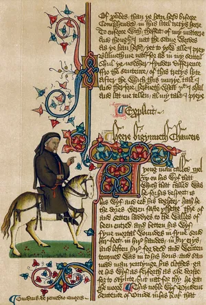

Research & kit notes
Museum register: sources beside interpretation. Primers below; deeper scans live in the Historical Library once Workspace is live.
-
The shared path
Pilgrimage in late medieval England, 1375–1425
Why people walked, major shrines, and the bourdon, scrip, and badges of the road.
-
Men-at-arms
Arms, armour, and the late medieval English pilgrim
-
Reenactment based in Chaucer
Using the Tales as social texture, not fantasy costume
-
Canterbury Tales for novices
Summary companion for new members
